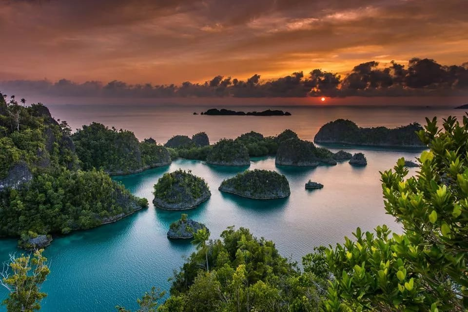
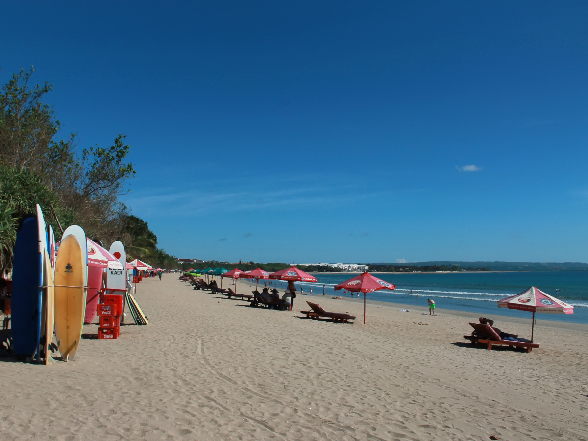

| Beranda | Menu Wisata | Website Pariwisata |
 Menu Wisata
Menu Wisata
Berikut adalah objek yang menarik dari Indonesia
Raja AmpatKeindahan kepulauan dengan laut yang jernih. |
Candi BorobudurCandi bersejarah yang menjadi salah satu wisata yang terkenal di Indonesia |
 Pantai KutaPantai yang terkenal di Bali dengan pemandangan laut yang indah. |
Contact Person :Jelajah Wisata
WhatsApp : +6285745506272
Email : emmanuellayc2526@gmail.com
Instagram : its_emm4aa